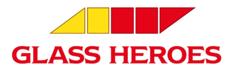

수입차 · 국산차 전면유리 교체, 돌빵 복원, 썬팅까지
차량 상태에 맞춰 정확하게 상담하고 시공합니다.
경남차유리는 2008년부터 18년째 자동차유리 교체·복원·썬팅을 전문으로 해온 시공 업체입니다.
울산을 중심으로 부산, 양산, 밀양, 경주, 포항 등 인근 지역에서
자동차유리 교체·복원·썬팅 작업 및 출장 서비스를 제공합니다.
차량 유리는 단순한 부품이 아니라, 운전자의 시야와 안전을 책임지는 중요한 요소입니다.
경남차유리는 차량 상태를 정확히 확인한 뒤, 작업 목적과 차량 특성에 맞는 정확한 시공을 진행합니다.
경남차유리는 자동차유리 전문 브랜드 '글라스히어로즈'의 공식 파트너입니다.

글라스히어로즈는 세계 최대 자동차유리 기업 벨론(Belron)의 기술 인증을 받은 전문 시공 브랜드로,
전국 네트워크를 통해 표준화된 시공 기준과 사후 보증 체계를 갖추고 있습니다.
경남차유리는 이 기준에 맞춰 자동차유리 교체·복원 서비스를 제공합니다.
자동차유리 교체부터 복원, 썬팅까지 차량 상태에 맞는 전문 시공을 제공합니다.
차량 유리 상태를 정확히 확인한 뒤, 안전성과 기밀성을 고려해 전면유리 교체를 진행합니다.
돌빵이나 미세 크랙이 더 커지기 전, 손상 부위에 맞춰 복원 가능 여부를 판단하고 시공합니다.
차량 용도와 운전 환경에 맞춰 시인성, 열차단, 프라이버시를 고려한 썬팅을 시공합니다.
상담부터 점검까지 차량 상태에 맞춰 단계별로 진행합니다.
차종, 연식, 차량번호 또는 차대번호를 바탕으로 유리 규격을 확인합니다.
전면유리, 측면유리, 루프유리 등 손상 위치와 크랙 상태를 확인합니다.
교체와 복원 가능 여부, 보험 처리 가능성, 출장 수리 여부를 상담합니다.
차량별 교체 가이드를 기준으로 탈거, 장착, 마감 작업을 꼼꼼하게 진행합니다.
누수, 풍절음, 센서 주변 마감 상태를 확인하고 출고 전 안내를 드립니다.
경남차유리에서 진행한 자동차유리 교체 · 복원 사례입니다.
자동차유리 교체 · 복원 상담은 아래 채널로 문의해 주세요.